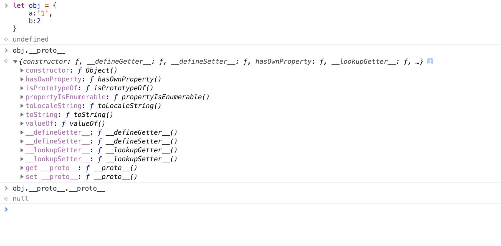

POSTS
JavaScript对象的简单介绍
对象的写法
对象一共有两种写法，具体写法如下
let obj = {
'name' : 'kim',
'age' : 100
}
let obj = new Object({'name':'kim','age':100})
关于对象的一些细节
- 键名是字符串，不是标识符，可以包含任何字符
- 引号可以省略，省略后只能写标识符
- 就算引号省略，键名也是字符串
对象的属性名和属性值
属性名
每一个key都是对象的属性名
属性值
每一个value都是对象的属性值
一些奇葩的属性名
let obj = { 1:'a', 3.2:'b', 1e2:true, 1e-2:true, .231:false, 0xff:3 }在Js中，对象的属性名最后都会被转化为字符串，如上代码的数字会转化成一般的10进制数来显示
使用Object.keys(obj)方法可以看到对象的所有关键值，例如

读取属性
查看对象的所有属性
Object.keys(obj) //查看自己的所有属性 console.dir(obj) //查看自身与共有的属性如何判断属性的自己的还是共有的？
obj.hasOwnProperty('属性名')原型
- 每个对象都有原型
- 原型存着对象的共有属性
- obj的原型的原型就是对象，obj.proto存着这个对象的地址
- 这个对象里有toString/constructor/valueOf等属性
- 对象的原型也是对象
- 对象的原型也有原型
- obj = {}的原型为所有对象的原型，这个原型包含所有对象的共有属性，是对象的根
- 这个根也有原型，是null

- 每个对象都有原型
查看属性
//查看属性有两种方法，一种是点语法，一种是中括号语法 obj['key'] //中括号语法 obj.key //点语法注:[]语法中，括号内比如为字符串，如果不是字符串会先求表达式的值，然后找属性。发生错乱
let name = 'kim'; obj[kim] //实际上这个obj[name]是等价于obj['kim'] obj.kim的一个小例题:打印person所有属性
let list = ['name','age','gender']; let person = { name = 'kim', age:100, gender:'boy' } for(let i = 0; i < list.length; i++){ let name = list[i]; //----？---- } // ？内代码选项 //1. console.log(person.name) //2. console.log(person[name])
删除属性
删除属性的方法
利用delete方法删除属性
delete obj.xxx delete obj['xxx']注意事项
要区分不含属性和属性值为undefined的区别
'xxx' in obj === false //不含有属性xxx 'xxx' in obj === true && obj.xxx === undefined //含有xxx属性但是值为undefined无法用obj.xxx === undefined来判断xxx是否为obj属性
增加与更改属性
直接赋值
let obj = { name : 'kim' } //name是字符串 obj.name = 'kim' //name是字符串 obj['name'] = 'kim' //name是字符串obj[name] = 'kim' //错，因为name是变量名，变量的值不确定let key = 'name' obj[key] = 'kim' //正确，key变量的值为字符串name 等价于obj['name'] = 'kim'let key = 'name' obj.key = 'kim' //错误，等价于obj['key']批量赋值
用Object.assign方法
Object.assign(obj,{name:'kim',age:100})修改和增加共有属性
无法通过自身修改和增加共有属性
let obj ={} let obj2 = {} obj.toString = '123' //只会修改obj自身的属性 //obj2.toString还在原型上修改或增加原型链上的属性
obj.__proto__.toString = '123' //不推荐使用__proto__ obj.prototype.toString = '123'一般来说不推荐修改原型，会出现很多问题
修改隐藏属性(proto)
不推荐使用proto
let obj = { name:'kim' } let obj2 = { name:'jim' } let common = { kind:'human' } obj.__proto__ = common; obj2.__proto__ = common;推荐使用Object.create方法
Object.create的功能:Object.create()方法创建一个新对象，使用现有的对象来提供新创建的对象的proto
let common = { kind:'human' } let obj = Object.create(common); //创建一个名为obj的对象，它的原型为common对象